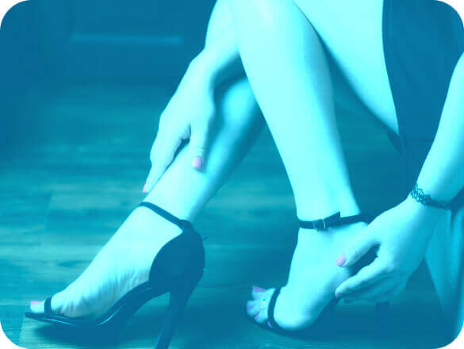

<div class="for-whom">
  <div class="for-whom__container">
    <div class="for-whom__desc">
      <div class="for-whom__title">
        <h2>Для кого підійде?</h2>
      </div>
      <div class="for-whom__subtitle">
        <p>
          Устілки створюються індивідуально для кожної особи та допомагають
          поліпшити комфорт, підтримуючи правильне положення стопи та зменшуючи
          навантаження на суглоби під час ходьби
        </p>
      </div>
    </div>

    <div class="for-whom__personal">
      <div class="for-whom__img">
        
      </div>
      <div class="for-whom__wrap">
        <p>
          Персональні устілки призначені для людей із особливостями стопи або
          ніг, такими як плоскостопість, високий свод, біль під час ходьби або
          проблеми з суглобами
        </p>
      </div>
    </div>

    <div class="for-whom__data">
      <h3>Залишіть свої дані і ми зв'яжемося з вами через 20 хвилин</h3>
    </div>
    @@include('../components/form.html', {"textarea": false, "email": false,
    "requiredEmail": 'required="false"',
    "title":
    "Замовити дзвінок"})
  </div>
</div>
